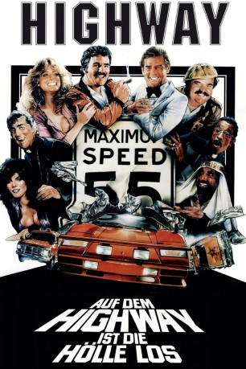

#6096 Auf dem Highway ist die Hölle los
Alternativ: The Cannonball Run
 
 IMDB-Wertung: 6.1 / 10
IMDB-Wertung: 6.1 / 10  Metascore: 0
Metascore: 0 
Alle zwei Jahre findet in den Vereinigten Staaten ein berüchtigtes illegales Autorennen von Küste zu Küste, von Connecticut nach Kalifornien, statt – der sogenannte Cannonball Run. Verschiedenste illustre Fahrer versuchen dieses Mal, den begehrten Pokal zu gewinnen, unter ihnen der Abenteurer J. J. McClure mit seinem verrückten Assistenten Victor, die mit einem Krankenwagen und dem Arzt Nikolas van Helsing unterwegs sind, um nicht von der Polizei gestoppt zu werden. Gelegentlich verwandelt sich Victor in den Helden Captain Chaos. Weiterhin fahren mit der Ex-Rennfahrer und Alkoholiker Jamie Blake, der mit seinem Mitfahrer Fenderbaum als Priester verkleidet auftreten. Oder Seymour Goldfarb, der in James Bond-Manier mit seinem Aston Martin antritt, sowie zwei durchgeknallte Japaner mit ihrem High-Tech-Subaru.
Jahr: 1981
Dauer: 95 Minuten
FSK: 6
Land: USA Studio: 20th Century FoxTonspuren:
Untertitel: Englisch,
Auflösung: 1080p (1920x1080) Größe: 7444 MB
Genre: Action, Komödie, Sport
Regisseur: Hal Needham
Drehbuch: Adam Sandler
Soundtrack:
Darsteller:
 Burt Reynolds als J. J. McClure
Burt Reynolds als J. J. McClure Roger Moore als Seymour
Roger Moore als Seymour- Farrah Fawcett als Pamela
 Dom DeLuise als Victor Prinzim
Dom DeLuise als Victor Prinzim- Dean Martin als Jamie Blake
- Sammy Davis Jr. als Fenderbaum
 Jack Elam als Doctor Nikolas Van Helsing
Jack Elam als Doctor Nikolas Van Helsing Adrienne Barbeau als Marcie
Adrienne Barbeau als Marcie Terry Bradshaw als Terry
Terry Bradshaw als Terry Jackie Chan als Subaru Driver #1
Jackie Chan als Subaru Driver #1- Bert Convy als Brad
 Jamie Farr als Sheik
Jamie Farr als Sheik Peter Fonda als Chief Biker
Peter Fonda als Chief Biker George Furth als A. F. Foyt
George Furth als A. F. Foyt- Michael Hui als Subaru Driver #2
- Bianca Jagger als Sheik's Sister
- Molly Picon als Mom Goldfarb
- Mel Tillis als Mel
 Rick Aviles als Mad Dog
Rick Aviles als Mad Dog- Warren Berlinger als Shakey Finch
 John Fiedler als Desk Clerk
John Fiedler als Desk Clerk Robert Tessier als Biker
Robert Tessier als Biker Lois Hamilton als Seymour's Girl
Lois Hamilton als Seymour's Girl- Richard Losee als Trans Am Driver
- Steve Dressler als Race Car Assistant , uncredited
 Hal Needham als Ambulance EMT , uncredited
Hal Needham als Ambulance EMT , uncredited- Jimmy 'The Greek' Snyder als The Greek
- Tara Buckman als Jill
- Norman Grabowski als Petoski
- Joe Klecko als Polish Racing Driver
- Grayce Spence als Chair Person
- Alfie Wise als Batman
- Johnny Yune als TV Talk Show Host
- Simone Burton als Seymour's Girl
- Finele Carpenter als Seymour's Girl
- Susan McDonald als Seymour's Girl
- Janet Woytak als Seymour's Girl
- Ben Rogers als Pennsylvania Patrolman
- James C. Lewis als Missouri Patrolman #1
- Fred Smith als California Patrolman #1
- Roy Tatum als Connecticut Patrolman
- Dudley Remus als New Jersey Patrolman #1
- Hal Carter als New Jersey Patrolman #2
- Brock Yates als Organizer
- Kathleen M. Shea als Starting Girl
- Nancy Austin als Phone Booth Lady
- Vickie Reigle als Car Hop Waitress
- Bob Stenner als California Highway Patrolman #2
- Ken Squier als California Highway Patrolman #3
- Samir Kamoun als Bedouin
Datei: X:\2-Dilogie(A-F)\Auf dem Highway\Auf dem Highway ist die Hölle los (1981, FSK6, 1920x1080).mkv seit 01.05.2017
Festplatte: HD Collection-2(A-Z)-3(A-M)
 Alle Filme aus Gruppe '2-Dilogie(A-F)\Auf dem Highway'
Alle Filme aus Gruppe '2-Dilogie(A-F)\Auf dem Highway'